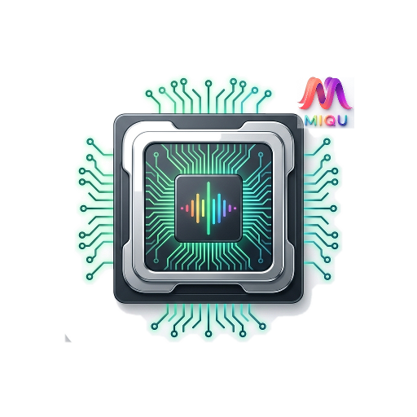

miquland directly from your TTY or select it in your login manager (miqudm, SDDM, GDM)—adhering to the same lightweight, display-manager-optional lifecycle when switching from Hyprland or Sway.
Vanilla Arch Linux, Debian, or Fedora base system.
Dynamic tiling compositor, scenefx GPU visual effects, and 0% idle CPU.
Cairo/Pango vector widget engine and Two-Tier configuration doctrine.
16 native Linux desktop applications and 2 Android mobile companion tools.
xdg-shell, wlr-layer-shell-v1, ext-session-lock-v1, and ext-idle-notify-v1.
wlr_output_schedule_frame), instant animation timer teardown, and zero busy polling.
miquctl) for runtime queries, window manipulation, and dynamic dispatching.
miqudm, SDDM, or GDM.
ViewGroup, CardView, Label).
/usr/share/ with on-demand user configs via --init-config and safe timestamped backups.
source = directives with automatic inotify file watchers for instant live reload.
eventfd and pipes.
Wayland status bar & taskbar featuring workspace indicators, window lists, system tray, battery/network telemetry, and interactive flyouts.
Interactive desktop canvas and widget layer bringing classic desktop ergonomics (shortcuts, widgets, icons) to Wayland tiling.
Visual theme and appearance manager with dynamic Material You wallpaper color extraction and live inotify reload propagation.
Privacy and firewall command center offering native management for Tor routing, OpenSnitch application firewall rules, and LUKS status.
Fast, lightweight native MPD (Music Player Daemon) client, playlist manager, and audio playback controller.
Fast application launcher, fuzzy dmenu alternative, workspace navigator, and active window switcher with keyboard navigation.
GPU-accelerated live workspace exposé and overview plugin providing fluid visual window management for miquland.
Native desktop notification daemon and slide-out notification history center implementing standard desktop notification specs.
High-performance, minimalist image viewer and media gallery application optimized for fluid pan, zoom, and transitions.

Hardware monitoring, CPU/GPU system telemetry, and diagnostic resource utility with real-time graphical graphs.
Wayland-native Display Manager and login greeter with PAM and systemd-logind user session management.
Independent wallpaper daemon responsible for rendering, multi-monitor scaling, and transitioning desktop background images.
Secure session locking utility strictly implementing the standard Wayland ext-session-lock-v1 protocol.
Idle management daemon monitoring user activity and power events via the Wayland ext-idle-notify-v1 protocol.
Native graphical Polkit authentication agent handling desktop privilege escalation prompts cleanly without external GTK/Qt dependencies.
Component testing sandbox and interactive widget showcase for developing, stressing, and verifying miqutoolkit controls.
Native Android healthcare diagnostic tool and clinical companion application designed for reliable patient tracking and medical utility.
Distraction-free Quran memorization, audio recitation, and study companion mobile application built for seamless listening and retention.
Execute ./install_all.sh from the root workspace to compile and install all components.
# Clone recursive workspace repository git clone --recurse-submodules https://github.com/miqu-project/miqu-project.git cd miqu-project # Run deterministic multi-stage build ./install_all.sh